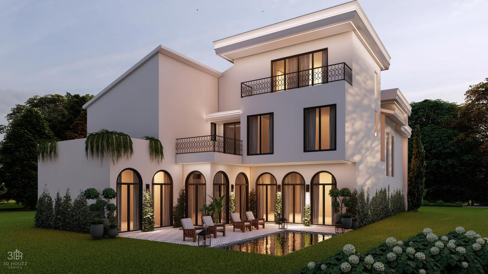
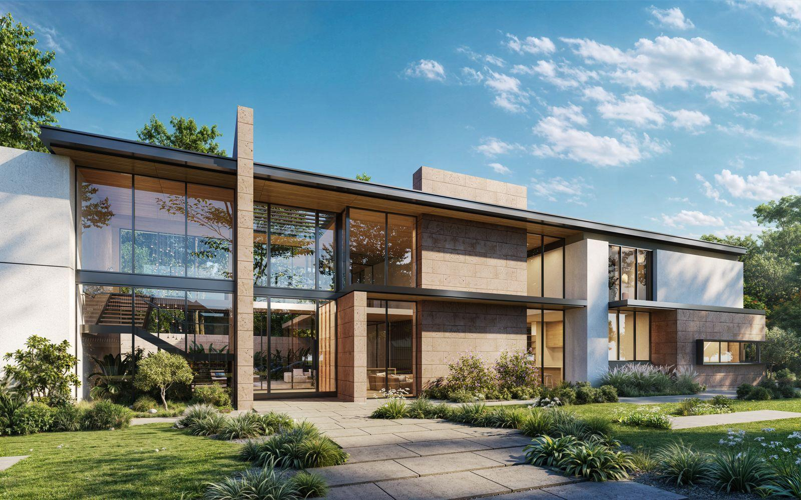

Custom Homes in
Memorial
Premium new construction in one of Houston's most sought-after residential communities. Thoughtfully designed, expertly built, and tailored to Memorial's distinctive character.
Building in One of
Houston's Most
Coveted Communities
The Memorial area stretches west of downtown Houston along the Buffalo Bayou corridor, encompassing some of the city's most desirable residential enclaves. At its heart are the six Memorial Villages — Bunker Hill Village, Piney Point Village, Hunters Creek Village, Hedwig Village, Hilshire Village, and Spring Valley Village. The broader Memorial area also includes established neighborhoods like Tanglewood and the communities surrounding Memorial Park.
Memorial offers a family-oriented lifestyle defined by its established tree canopy of towering live oaks, loblolly pines, and magnolias, along with direct access to Memorial Park (1,500 acres) and Terry Hershey Park along the bayou. Spring Branch ISD consistently ranks among the top-performing districts in the Houston metro, with Memorial High School drawing families from across the region. Considering a custom build here? Explore our Houston construction cost guide for detailed pricing information.


What to Expect
When You Build
in Memorial
Each Memorial Village maintains its own deed restrictions — minimum lot coverage ratios, setback requirements, exterior material standards, and height limits. Piney Point, Hunters Creek, and Bunker Hill all enforce detailed architectural guidelines designed to preserve the established character of their streets. A builder without experience in these jurisdictions can face costly delays and redesigns.
Memorial lots typically range from 12,000 to over 25,000 square feet, many shaded by mature live oaks, pines, and pecans. Houston's expansive clay soils and Memorial's proximity to Buffalo Bayou tributaries make foundation engineering and flood mitigation critical considerations for every build. Many lots sit in or adjacent to designated floodplains, requiring elevation studies and careful drainage planning.

Deed Restrictions by Village
Each of the six Memorial Villages enforces its own building regulations — from minimum lot coverage and setback requirements to exterior material standards and height limits. Navigating these rules requires a builder with direct experience in these jurisdictions.
Lots & Tree Canopy
Memorial lots range from 12,000 to over 25,000 square feet, often shaded by towering live oaks and loblolly pines. Tree preservation is both a community expectation and a regulatory requirement that shapes how every home is sited and built.
Flood & Foundation
Houston's expansive clay soils and Memorial's proximity to Buffalo Bayou tributaries make foundation engineering and flood mitigation critical. Many lots require elevation studies, and drainage planning is essential to long-term structural integrity.

How We Build
Custom Homes
in Memorial
Mohamed Solanji personally oversees every Memorial project — present on the jobsite daily, reviewing work and coordinating trades. Decisions are made quickly, quality is verified firsthand, and there is no gap between what is promised and what is delivered. In a neighborhood where the details matter as much as the overall design, this level of hands-on involvement makes a measurable difference.
Solanji Construction has deep experience working within Memorial's deed restriction frameworks while maximizing each lot's design potential — from setbacks and lot coverage to exterior materials and height. Recent Memorial projects include custom homes on Meadow Lake Lane and Huckleberry, both reflecting our commitment to precision craftsmanship and foundation expertise suited to this area's specific conditions. Contact us to discuss your Memorial project.

Why Memorial Homeowners
Choose Solanji Construction
-
Memorial Villages Deed Restriction Expertise. Deep understanding of each village's unique building regulations and approval processes.
-
Foundation Engineering for Houston Clay. Proven experience with engineered foundations suited to Memorial's challenging soil conditions.
-
Owner-Led Accountability. Mohamed Solanji is personally present on your jobsite throughout the build.
-
Premium Material Selection. Quality finishes that meet the expectations of Memorial's most discerning homeowners.
-
Transparent Budgeting. Comprehensive line-item budgets and clear communication from pre-construction through delivery.

Other Service Areas & Resources
Solanji Construction builds luxury custom homes across Greater Houston. Explore our other service area pages or our detailed cost guide to learn more about what goes into building a home in Houston.
Ready to Build in
Memorial?
Whether you are planning a tear-down and rebuild in one of the Memorial Villages or building on a new lot near Memorial Park, Solanji Construction delivers the craftsmanship and local expertise this community demands.
Houston, TX 77057